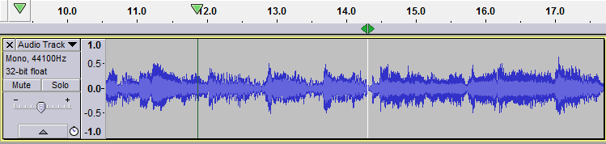
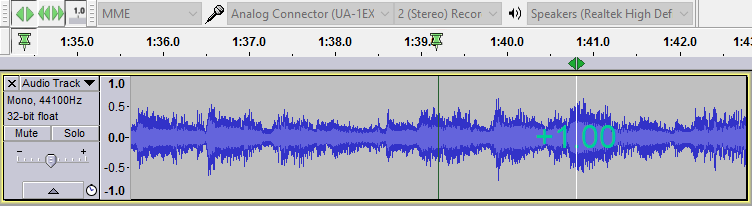
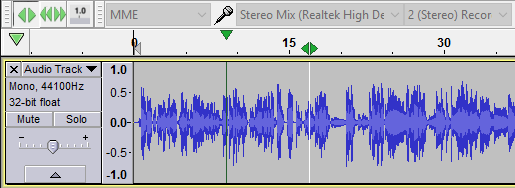

Scrubbing and Seeking
From Audacity Development Manual
The term "Scrubbing" comes from the early days of the recording industry and refers to the process of physically rotating tape reels to move the tape past the playhead to locate a specific point in the audio track.
In Audacity
- Scrubbing changes the audio position without skipping.
- Seeking changes the audio position, skipping over audio to move more quickly.
Contents
Scrubbing
The primary method for scrubbing is with the Scrub Ruler, the gray strip immediately below the Timeline. The Scrub Ruler is set on and displayed by default in Audacity, if you have turned it off you can get it displayed again by right-clicking in the Timeline and selecting from the dropdown menu.
If you hover the cusor over the Scrub Ruler you will see green left- and right-pointing scrub widget appear (along with a tooltip if you continue to hover). Clicking anywhere in the Scrub Ruler and releasing the left mouse button will start Scrubbing from there. Note that in this image the green scrub widget is to the right of the green triangle playhead, indicating that forwards scrubbing towards the pointer is taking place.
- 
On starting scrub by clicking in Scrub Ruler, the green scrub widget will appear in the Scrub Ruler and the green playhead cursor  will appear in the Timeline.
will appear in the Timeline.
Playback continues until the playhead in the Timeline  reaches the green Scrub widget , and restarts when the pointer is moved again. If you keep moving the pointer slowly, this plays the audio slowly. If you move the pointer a long way from the playhead, this plays at normal (1x) speed.
reaches the green Scrub widget , and restarts when the pointer is moved again. If you keep moving the pointer slowly, this plays the audio slowly. If you move the pointer a long way from the playhead, this plays at normal (1x) speed.
When Scrubbing you can left-click in Scrub Ruler and hold the button down to temporarily change to Seeking. Once you release the mouse button you can move it to resume Scrubbing from the point at which you stopped Seeking.
Right-clicking anywhere in Scrub Ruler displays a menu identical to that in where you can quickly start, stop (or change between) Seeking or Scrubbing or turn Scrub Ruler off. Using this menu to change between Seeking and Scrubbing saves you having to move the pointer to Scrub Toolbar and so change the playhead position un-necessarily. Adding and using shortcuts for Scrub and Seek has the same benefit.
- Once Audacity is in scrub play mode it will remain in that mode until you explicitly stop playback (which then allows you to restart in normal play mode).
- To stop scrub play and set the cursor at the current playback position, click the Stop button
 (or its shortcut SPACE). It may be useful to label that position for future reference. Alternatively click the Play button
(or its shortcut SPACE). It may be useful to label that position for future reference. Alternatively click the Play button  to restart normal playback immediately from the current playback position. These methods remove any selection that was present before stopping scrub play.
to restart normal playback immediately from the current playback position. These methods remove any selection that was present before stopping scrub play.
- To stop scrub play, leaving the selection or editing cursor where it is, use the Escape button.
- To stop scrub play and set the cursor at the current playback position, click the Stop button
- The speed of scrub can be controlled by rotating the mouse wheel (if your mouse is so equipped). Each four steps upwards of the rotated wheel doubles the speed, and each four steps downwards halves the speed. This is equivalent to one octave of pitch change. The changed scrub speed will be shown for a few seconds in ochre text superimposed on the track. Changed speeds set by the mouse wheel are not remembered if you stop playback and restart Scrubbing.
- You can zoom at the mouse pointer position while Scrubbing or Seeking by holding the CTRL key (CMD on Mac) down and rotating the mouse wheel, or by using the zoom buttons in Edit Toolbar or their shortcuts, or by using the View Menu zoom commands.
- For safety reasons, you cannot start Scrubbing or Seeking while recording (or paused in recording mode).
Seeking
Seeking is similar to Scrubbing except that it is playback with skips, similar to using the seek button on a CD player. Even if you move the mouse pointer a long way from the current position of the playhead, the playhead will immediately move very close to the mouse pointer, letting you move across the audio rapidly.
Seeking with unpinned playhead is always at 1x speed. You can control the maximum seek speed with by mouse position and mouse wheel when you are in pinned playhead mode.
To enter Seeking or change from Scrubbing to Seeking, click the Seek button in Scrub Toolbar . Alternatively you can use the menu item and select from the cascading menu, or set a shortcut for Seek in Keyboard Preferences.
When Seeking, the Seek widget will appear in the Scrub Ruler (or in the Timeline if the Scrub Ruler is not displayed). There is no need to drag the widget when in Seek - moving the pointer seeks in the same way as drag.
Pinned playhead Scrubbing and Seeking
If you use Scrubbing or Seeking with the playhead pinned in the center of the project window, so that playback constantly scrolls the track, the speed of scrub or seek playback behaves differently to when the playhead is unpinned.
In pinned playhead mode the mouse pointer position always directly determines the speed of scrub or seek. The further away you move the mouse pointer from the Timeline playhead (in either direction), the faster the scrub or seek. The current scrub or seek speed is shown permanently in lime green text, superimposed on the track. The default maximum scrub speed is +1.00 (for forwards play) and -1.00 (for backwards play), that is normal speed. The default maximum seek speed is +10.00 (for forwards play) and -10.00 (for backwards play).
The speed of scrolling scrub or seek as determined by the mouse position can be varied by rotating the mouse wheel (if your mouse is so equipped). Move the wheel upwards to increase the speed or downwards to reduce the speed. This works at the same time as modifying the speed by moving the pointer left or right. The maximum possible speed with the pointer at either edge of the window and the wheel at maximum speed is 32.00x for Seeking and 320.00x for Scrubbing. Changed speeds set by the mouse wheel are not remembered if you stop playback and restart Seeking.
With this setting, when you move the pointer back to the 75% position on the waveform you will get normal speed forwards playback and at 25% position you will get normal speed backwards playback. Moving the pointer towards the center from there will give you gradually slower than normal speed and moving towards the right or left edges will give you gradually faster than normal speed up to your chosen maximum of 2.00x.

- Image of forwards scrubbing at 1.00x speed having set a 2.00x maximum speed, waveform moving leftwards.
Other ways to Scrub and Seek
Alternatively you can use the or menu item and select or from the cascading menu, or set a shortcut for either or both of these in Keyboard Preferences.
If you start scrub from this way, the green playhead cursor  will appear but otherwise nothing will happen until you move the mouse pointer to right or left to play forwards or backwards respectively.
will appear but otherwise nothing will happen until you move the mouse pointer to right or left to play forwards or backwards respectively.
Scrubbing and Seeking using the Scrub Toolbar
The Scrub Toolbar is not dispayed by default, you can turn it on from and selecting .
Clicking the Scrub button in Scrub Toolbar when stopped or using standard playback will put you into scrub play mode. Alternatively you can use the menu item and select from the cascading menu, or set a shortcut for Scrub in Keyboard Preferences. Similarly the Seek button in Scrub Toolbar can be clicked to start seeking.
On starting scrub or seek, the green playhead cursor  will appear but otherwise nothing will happen until you move the mouse pointer to right or left to play forwards or backwards respectively. Playback continues until the playhead in the Timeline
will appear but otherwise nothing will happen until you move the mouse pointer to right or left to play forwards or backwards respectively. Playback continues until the playhead in the Timeline  reaches the pointer, and restarts when the pointer is moved again. If you keep moving the pointer slowly, this plays the audio slowly. If you move the pointer a long way from the playhead, this plays at normal (1x) speed.
reaches the pointer, and restarts when the pointer is moved again. If you keep moving the pointer slowly, this plays the audio slowly. If you move the pointer a long way from the playhead, this plays at normal (1x) speed.
Once you move the pointer, the scrub widget , or seek widget , appears and a vertical white line through the waveform follows the movement of the scrub widget.
- You can switch between scrubbing and seeking by clicking on the opposing button
- You can stop scrubbing by clicking on the Scrub button again, and similarly for seeking by ckicking on the Seek button again
Clicking the Scrub Ruler button in Scrub Toolbar makes Scrub Ruler appear below the Timeline (or hides Scrub Ruler when it is already enabled). Alternatively you can use the menu item and select from the cascading menu, or set a shortcut for Scrub Ruler in Keyboard Preferences.
Scrubbing and Seeking without the Scrub Ruler
It is possible to Scrub or Seek without having the Scrub Ruler displayed, in which case the scrub or seek widget is displayed at the bottom of the Timeline instead.
You can turn the Scrub Ruler on or off from the right-click dropdown menu of the Timeline. Alternatively you can use the menu item and select from the cascading menu, or set a shortcut for it in Keyboard Preferences.
The image below shows scrubbing taking place in default unpinned playhead mode. Note that the Scrub Play button is shown as depressed in Scrub Toolbar to indicate that scrubbing is active. Also note that the green left- and right-pointing scrub widget is to the right of the green triangle playhead, indicating that forwards scrubbing towards the pointer is taking place.
- 
The image also shows the Scrub Ruler button in Scrub Toolbar is up (off). If Scrub Ruler was enabled by depressing the Scrub Ruler button, the scrub widget would appear in Scrub Ruler immediately below the Timeline.